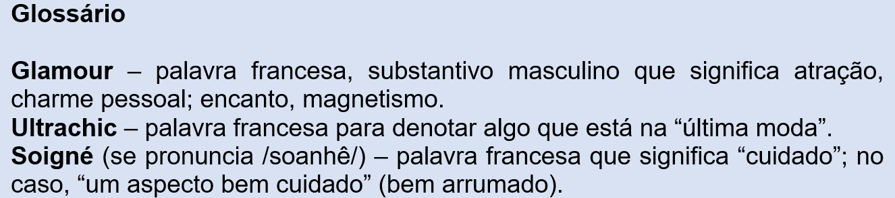
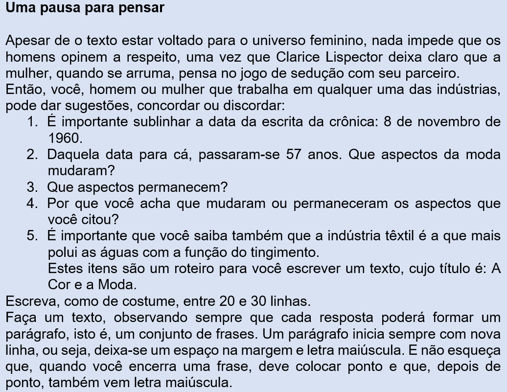
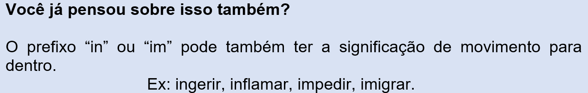
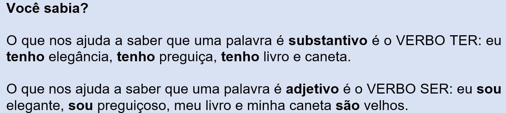

Capítulo 4: A cor na indústria têxtil e vestuário
Questão-problema:
Quem trabalha na indústria têxtil e do vestuário conhece antecipadamente as cores que farão sucesso na próxima estação? Se não conhece, sabe quem determina isso? O texto a seguir, A Cor do Glamour, foi escrito por Clarice Lispector para o “Correio da Manhã”. Clarice foi convidada pelo jornal a escrever uma crônica diária voltada para o mundo feminino. A vida estava mudando devagarzinho para a mulher. O mercado começava receber eletrodomésticos que diminuíam o trabalho feminino, uma vez que a mulher já contribuía no mercado de trabalho. A mulher deveria pensar um pouco mais nela mesma. Clarice, em 1960, já era muito conhecida. O jornal determinara que ela escrevesse sobre o poder de sedução feminina. Esse tipo de assunto não era a sua praia. Então, para evitar comparações e críticas, ela escrevia as crônicas sob os pseudônimos de Teresa Quadros, Helen Palmer e Ilka Soares.

A cor do Glamour
(Clarice Lispector)
Tecnicamente o preto é a inexistência. Mas, em termos de moda feminina, é a cor do momento, ultrapassando as outras todas em sedução e elegância. Deixando de ser agora uma prerrogativa do inverno, é a cor que será usada também neste verão, não de maneira clássica e discreta, mas para ser ultrachic e encabeçar as tendências da moda. Aliás, qual a mulher não se sente atraída por ela? Tanto para as louras como para as morenas, é a cor do charme, da personalidade. Conforme sua aplicação, pode ser suave, ousada, marcante, pura ou violenta... Mas, atenção! É uma cor que não suporta a mediocridade. Cuidado se sua pele estiver sem viço ou se você já ultrapassou os quarenta anos. O preto exige uma maquilagem impecável, um aspecto “soigné”, cabelos bem penteados. Madeixas caídas nos ombros, cabeleiras revoltas são um veneno para o preto. Se sua tez está perdendo o tom quente que lhe emprestou o sol, se você se sente “cinzenta”, não hesite em, neste momento de transição, recorrer a algum produto que lhe dê artificialmente uma pele dourada ou faça uma maquilagem com uma base que iguale as manchas. Suas sobrancelhas e pestanas devem estar impecavelmente escovadas e maquiladas. Escolha uma “sombra” clara ou mesmo prateada para as pálpebras, em harmonia com a tonalidade de seus olhos. E abandone o batom muito claro. Um batom vivo faz destacar a cútis e o preto de um vestido. Um vermelho puxado para o azul assenta muito bem à sua pele cor de marfim. Se seus cabelos são ruivos ou de um louro avermelhado e sua pele dourada, escolha um batom alaranjado, porém não muito. Excusa dizer que mãos e unhas maltratadas enfeiam o preto, bem como luvas e bolsas manchadas. Mas isso, como nenhuma de vocês ignora, se aplica a todas as cores. Quando, porém, escolhe o preto – a cor mais nítida, mais impecável, mais sedutora, a mulher tem a obrigação de ser, mais do que nunca, nítida, impecável, sedutora.

Reconstruindo conhecimentos:
A importância dos prefixos e sufixos
Aproveitando o texto de Clarice Lispector, gostaria de apresentar-lhe algumas coisas interessantes da nossa língua. Não é que você não as conheça. Você já deve tê-las dito muitas vezes, mas quero convidar-lhe a fazer uma viagem no interior de algumas palavras. Por exemplo, quando Clarice Lispector escreve “Tecnicamente o preto é a inexistência”, a palavra em negrito – excluindo o significado de “ausência” 3 (preto é ausência da cor) – é “parente” da palavra “existência”, porém significando seu oposto. Isto foi conseguido porque se colocou, antes da palavra de origem, o “in”, que significa “não”. Inexistência significa, literalmente, não existência. A este pedaço que iniciou essa palavra damos o nome de prefixo. Quer outro exemplo? “Ele demonstrou indiferença a tudo que lhe foi dito.” Isto é, “o que lhe foi dito não o atingiu. Veja, então, que um pedacinho de palavra – o prefixo “in” – tem o poder de oposição.

Vamos a outro exemplo do texto:
“Mas, em termo de moda feminina, é a cor do momento, ultrapassando as outras todas em sedução e elegância.”
A palavra em negrito se origina do verbo “passar”. O prefixo “ultra” tem o significado de “além de”, “em excesso”, “extremamente”.
No texto, ultrapassar pode significar “passar à frente de”:
“...é a cor do momento, passando à frente as outras todas em sedução e elegância.”
Mas, em outro contexto, ultrapassar
a) pode significar “exceder o limite”. Exemplo: “Luís ultrapassou as normas da boa educação”.
b) pode querer dizer “ir além de”. Exemplo: “A ira fez-me ultrapassar os limites da boa vizinhança”.
c) pode significar “transpor”. Exemplo: “Ultrapassamos os Alpes”.
d) Pode querer dizer “antiquado”. Exemplo: “Esse modo de pensar está ultrapassado”.
Vamos ver agora alguns pedaços de palavras que, por terminarem o vocábulo, são chamados de sufixos.
Encontramos no texto a palavra MEDIOCRIDADE, assim:
“Mas, atenção! É uma cor que não suporta a mediocridade.”
A palavra em negrito “é filha” do adjetivo “medíocre” (qualquer coisa pode ser medíocre, isto é, de qualidade média, comum; mediana, modesta, pequena ou, também, pejorativamente falando, sem expressão ou originalidade, pobre, banal, passável).
Então: medíocre + dade= mediocridade
Quando se acrescentou o sufixo “dade”, o adjetivo “medíocre” se transforma no substantivo “mediocridade” (qualquer coisa pode ter a mediocridade dentro dela)
Esse sufixo – “dade” – tem a capacidade de transformar um adjetivo em substantivo.

Para entender mais:
Estrutura das Palavras
Praticando:
1. Escreva o antônimo (o oposto) da palavra em negrito, colocando-lhe o prefixo “in” ou “im” e fazendo, quando preciso, as devidas adequações:
a) Uma quantia calculável pode, um dia, tornar-se __________________.
b) Ele não aceita que este assunto seja questionável. Diz que isto é ________________.
c) Medidas políticas populares podem tornar-se às vezes _____________.
d) Tudo estava indo bem, tinha um apetite de leão. De repente o doente tornou-se ___________.
e) Parada na porta, sorrindo, o vulto de sua mãe era-lhe totalmente visível. Porém, ao sopro do vento, sua imagem tornou-se _________________.
f) Ele é o oposto de uma pessoa tratável. Ele é ____________________.
g) Nada o atinge. Ele diz que tem o corpo fechado; ele é ___________________.
h) As coisas sagradas não devem ser tocadas; são coisas ___________________.
i) No início das aulas, o tráfego fica infernal: praticamente fica ________________.
2. Que significado você daria às palavras que trazem consigo o prefixo “ultra”?
a) Minha nona, italiana, era ultracatólica, e meu pai, ultraconservador.
b) Cuidado se sua pele estiver sem viço ou se você já ultrapassou os quarenta anos.
c) A região a que te referes situa-se ultramar.
d) A moda dessa revista está totalmente ultrapassada.
e) Tente entender, ela é uma menina ultrarromântica.
f) São documentos ultrassecretos.
g) Aquele avião é ultrassônico.
h) O acidente aconteceu por causa à da ultrapassagem indevida.
i) Ultrapassamos as correntezas do rio com tranquilidade.
j) Ele sempre quer ultrapassar seus colegas na produção.
3. Transforme os adjetivos entre parênteses em substantivos:
a) O que fizeste foi uma (cruel) ________________ com o bichinho!
b) Sua conduta certificou-nos de que tens (digno) _________________.
c) Todos os homens almejam ter (feliz) __________________.
d) Ficamos encantados com a (sagaz*) ______________ de um bebê tão novinho.
e) Ninguém foi culpado de nada. Houve ali uma (fatal) _________________.
f) Do grupo todo, ele é o que demonstra ter maior (ágil) __________________.
g) De todas as (divinas) _________________ gregas, Júpiter é o deus maior.
h) Paulo não foi arrogante quando criticado; ao contrário, demonstrou (humilde) ________________.
i) Os princípios da Revolução Francesa foram (livre) _______________, (igual) _________________ e (fraterno) _________________.
j) Devemos todos lutar por uma (social) ________________ mais justa.
k) Numa república, o Estado deve ter (laico*) _______________________.
4. Escolhi um texto bem humorado do Millôr Fernandes do seu livro “Fábulas Fabulosas” para você exercitar os conceitos de substantivos abstratos e adjetivos. Leia o texto; você vai se divertir.
Amor com amor se paga
(Millôr Fernandes)
Morria o dia e Ismael morria. Sob a colcha de linho, tiritava seu corpo ainda relativamente moço, corpo, aliás, de homem cuja vida não fora das mais operosas. A esposa, a seu lado, ainda moça também, assistia-o em seu transe derradeiro. Ismael morria. E Isaura assistia. E, no pungir da morte, Ismael confessou:
̶ Isaura, meu amor, quero morrer com a consciência límpida. Na hora grave e triste em que parto desse mundo, devo levar a alma leve pra iniciar outra existência sem o peso desta. Confesso que errei muito em minha relação com você. Nem sempre fui verdadeiro, nem sempre fui fiel. Mas, para não tirar da minha consciência os dias e as vezes em que pequei ou errei, coloquei um saquinho dentro do armário de roupa, lá embaixo, onde guardo os sapatos velhos. Nesse saquinho você encontrará tantas moedas de mil, mil réis, mil cruzeiros, mil cruzados, mil reais – ah, nosso dinheiro muda tanto! – quanto foram meus erros e pecados. Não abra o saquinho antes da minha morte. Só depois, só depois...
Dizendo isso, Ismael desmaiou. Desmaiou e reviveu. A morte poupo-o, a vida convidou-o para novas aventuras, e ele mudou as moedas de saquinho, e o saquinho de lugar. E o tempo passou. E veio então a vez da mulher cair doente, pois aos cônjuges o destino reserva sempre alternação nas moléstias, para que possam repartir ocasionalmente, como interessa à nossa fábula, lealdades e sacrifícios. Os médicos examinaram cuidadosamente Isaura e concluíram que não era nada grave. Consequentemente (ah, os esculápios!) ela começou a dar sinais de que não ia durar muito. Sentindo a morte, chamou Ismael, o marido, e disse:
̶ Ismael, naquele dia, gravemente enfermo, você teve a coragem de me confessar que tinha errado. Chorei. Mas, quando você pensava que eu chorava ferida por seus erros, na verdade eu chorava ferida pelos meus. De remorso por não poder também contar meus pecados, na hora em que você partia para sempre. Se você não podia levar para outro mundo a manchas de suas faltas, como dizer-lhe naquele momento que mais pecadora era eu, amargurando o coração moribundo que se mostrava tão nobre? Agora, porém, quando é meu fim que se aproxima, eu lhe digo:
̶ Se eu morrer, como é quase certo, você vai naquele latão na cozinha, onde está escrita a palavra Milho. Nessa lata eu pus um grão de feijão por cada erro que cometi em relação a você. Mas só abra depois que se instalar em mim uma absoluta rigidez cadavérica.
Dizendo isso, Isaura deu início a seu the end. Fechou os olhos e principiou a falecer. Antes porém teve um lampejo, uma lembrança. Abriu os olhos e disse: ̶ Ah, Ismael, ia me esquecendo; na lata há alguns feijões de menos porque, no outro dia, no teu aniversário, a empregada tirou quatro xícaras para fazer a feijoada. E morreu.
MORAL: QUANDO O PECADO É GRANDE NÃO IMPORTA UMA FEIJOADA A MAIS OU A MENOS.
a) Existe um adjetivo relativo a um substantivo concreto no excerto abaixo. Diga qual é e a qual substantivo ele se relaciona:
Sob a colcha, tiritava seu corpo ainda relativamente moço.
b) Existe um substantivo abstrato e um adjetivo. Diga quais são:
Isaura, meu amor, quero morrer com a consciência límpida.
c) Há dois adjetivos que podem se transformar em substantivos abstratos. Transforme a frase, fazendo a transformação:
Nem sempre fui verdadeiro, nem sempre fui fiel.
d) Há substantivos concretos. Sublinhe-os:
... coloquei um saquinho dentro do armário, lá embaixo, onde guardo os sapatos velhos.
e) Onde estão dois substantivos abstratos do excerto abaixo?
Nesse saquinho você encontrará tantas moedas (...) quanto foram meus erros e pecados.
f) Há mais dois substantivos abstratos. Onde?
... que possam repartir ocasionalmente, como interessa à nossa fábula, lealdades e sacrifícios.
g) Leia o excerto:
De remorso por não poder também contar meus pecados, na hora em que você partia para sempre.
Quais são os substantivos abstratos que ali estão?
h) Encontre um adjetivo no excerto:
Se você não podia levar para outro mundo as manchas de suas faltas, como dizer-lhe naquele momento que mais pecadora era eu,...
i) Há dois adjetivos que dizem respeito a um substantivo abstrato. Quais são eles?
Mas só abra depois que se instalar em mim uma absoluta rigidez cadavérica.
O que aprendi:
- Prefixos e sufixos são elementos vocabulares que se adicionam a palavras já existentes, transformando seus significados.
- Quando adjetivos incorporam sufixos, podem se transformar em substantivos abstratos.
- Substantivos abstratos são diferentes dos substantivos concretos.
- Os substantivos concretos têm existência própria.
- Os substantivos abstratos normalmente se originam de adjetivos. Por isso não perdem essa essência: precisam, assim como os adjetivos, de um ser concreto para existirem.